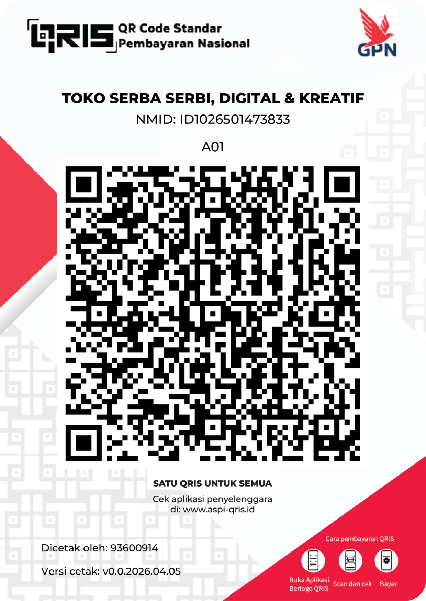

🧮
Tryout OSN Matematika SD
Olimpiade Sains Nasional · Tingkat Kabupaten/Kota · 2026
Aturan Skor OSN-K:
Mudah ×1,00 · Sedang ×1,25 · Sulit ×1,50 · Salah/Kosong = 0
☕ Dukung pengembangan aplikasi ini

TOKO SERBA SERBI, Digital & Kreatif
NMID: ID1026501473833
Panduan Singkat
Petunjuk penggunaan cepat untuk memulai dan memaksimalkan fitur
aplikasi.
-
Nama: Masukkan nama minimal 2 karakter lalu tekan
Mulai Tryout.
-
Durasi: Pilih durasi di dropdown; pilih
Tanpa batas waktu bila ingin tanpa timer.
-
Mode: Tryout Lengkap (soal acak),
Latihan per Topik (pilih topik),
Soal Ditandai (latihan dari soal yang dibintangi).
-
Pembintangan: Tekan ★ pada kartu soal untuk
menandai; soal ditampilkan di mode Soal Ditandai.
-
Riwayat: Hasil tersimpan lokal (maks 50 entri).
Buka Riwayat untuk melihat grafik, detail, dan
ulangi tryout.
-
Selesai: Setelah mengumpulkan, lihat rincian
skor, per-topik, lalu gunakan tombol untuk kembali atau ulangi.
-
Donasi: Klik tombol donasi atau scan QRIS untuk
berdonasi jika ingin mendukung pengembangan.
-
Kritik & saran: Kirim pesan singkat (SMS) ke
087737439614.